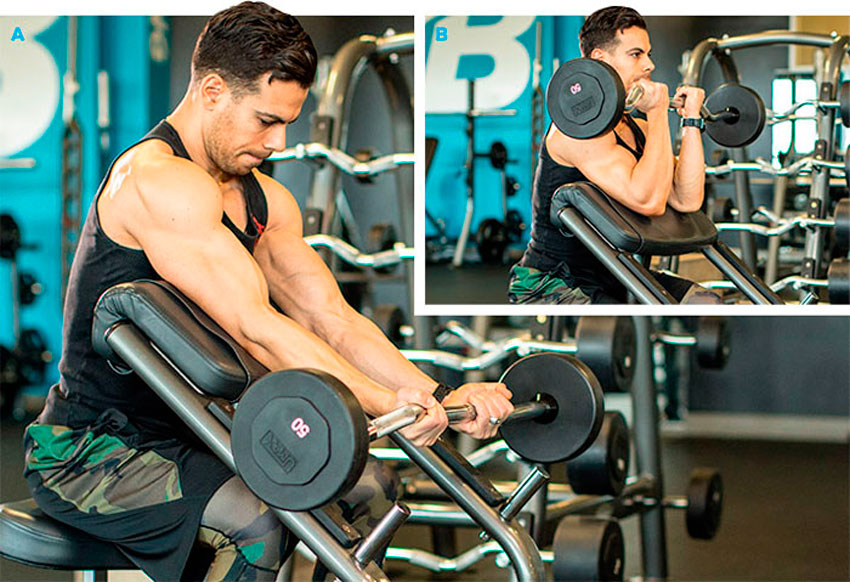
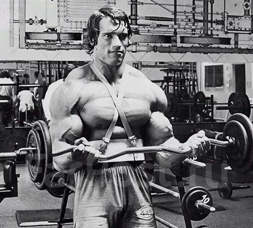

Очень эффективное и достаточно простое изолирующее упражнение на бицепс.
Лучше всего на рост мышечных волокон влияют изолирующие упражнения, такие как сгибание руки сидя через колено.
Это упражнение очень часто можно увидеть в схемах тренировок для
атлетов любого уровня подготовленности. Оно изолированно действует
на бицепс, заставляя его сильно сокращаться.
В будущем это положительно отразится на приросте мышечной массы рук.
Техника выполнения упражнения
Атлет выполняет данное упражнение сидя. Для этого нужно сесть на горизонтальную скамью и взять в руку рабочий вес. Гантель находится в опущенной вниз руке. Рука упирается в месте чуть выше локтя во внутреннюю поверхность бедра возле коленного сустава.
Если упражнение было начато с правой руки, то гантель в верхней точке амплитуды должна коснуться левой части груди.
Взять гриф сверху. Руки должны образовывать замок, хват – ладонями от себя.
Кисти расположены чуть шире плеч.
Когда рука движется вниз, выполняется вдох, а когда вверх – выдох. Вторая рука должна хорошо упираться в другое колено.
При выполнении упражнения нерабочая рука не должна находиться в движении. Это может препятствовать нормальному выполнению упражнения, так как часть нагрузки будет ложиться на неправильную руку.
Сгибание гантели с колена не рекомендуется выполнять атлетам, которые ранее имели серьезные травмы локтевых суставов. В этом упражнении локоть получает и динамическую, и статическую нагрузку, поэтому этот факт важно учитывать.
Советы
Рука в нижней точке амплитуды обязательно должна разгибаться до конца. Только в таком случае бицепс сможет получить максимальную нагрузку. Также, важно сделать это движение в умеренном темпе, без рывков и лишних движений.
В верхней точке амплитуды бицепс должен как можно лучше сократиться. Это можно сделать только в том случае, если в конце движения кисть будет максимально развернута вверх. Другими словами, мизинец должен подняться выше большого пальца, а край гантели – опереться в грудь.
Локоть всегда удерживается у внутренней части бедра, как можно дальше от туловища. При этом предплечье оказывается параллельно линии груди и плеч.
Внизу кисть может разворачиваться ладонью внутрь. Это еще лучше растянет бицепс.
Сгибание выполняется в конце тренировки на руки, так как только в таком случае упражнение сможет увеличить скорость прироста мышечной массы.
Когда выполнять
Это упражнение может подойти для атлетов любого уровня подготовленности. Но в любом случае сгибание должно выполняться после базовых упражнений на рабочую мышцу. Не нужно перемещать его в начало тренировки, так как мышца не будет готовой к получению изолированной нагрузки.
Количество повторений
3-4 подхода по 10-15 раз. Вес индивидуален для каждого спортсмена и его подготовки.
Практическое видео
Сгибание рук на скамье Скотта
Скамья Ларри Скотта, по легенде, помогла самому Ларри обрести пики
бицепса без генетической предрасположенности. Современная наука
опровергает такие чудеса, но снаряд прижился в тренажерных залах,
ведь он позволяет качать руки без читинга. Это упражнение можно выполнять
с минимальным весом, так как оно – самое изолированное из существующих.
Сгибание рук со штангой на скамье Скотта может завершать тренировку
двуглавой мышцы плеча, или
быть последним движением в день спины. Проработка бицепсов будет существенной.
Техника выполнения упражнения
Важно отрегулировать высоту подставки скамьи под себя.
В положении сидя плечи должны свободно лежать на подставке, подмышки – упираться в край скамьи.
Корпус слегка наклоняется вперед так, чтобы было удобно взять штангу.Спина остается прямой, ладони смотрят вверх. Стартовое положение – со слегка согнутыми локтями.
С выдохом нужно поднять руки к плечам, и задержаться статически в точке максимального сгибания рук.
На вдохе штанга опускается вниз, при этом локти не меняют своего положения, и не разгибаются в «мертвое» положение.
Выполняется нужное количество повторений, затем штанга возвращается в исходное положение

Советы
Не нужно делать упражнение в предельной полной амплитуде. Это может привести к травме сустава.
Лучше брать штангу со стоек при помощи страхующего. Он же помогает вернуть штангу на стойки, чтобы избежать «вставки» локтей и перерастяжения связок локтевого сустава.
Ширина хвата зависит от положения сустава, не должно быть дискомфорта и болевых ощущений.
Движение происходит при прижатых к пюпитру трицепсах. Не нужно отрывать их от поверхности и выводить локти вверх. Смысл упражнения в изоляции, а не в том, чтобы максимально поднять локти.
Не нужно докручивать запястья к плечам.
Во время упражнения допускается прогиб поясницы
Когда выполнять
Если атлет делает концентрированные сгибания, скамья Скотта может стать «предпоследней» остановкой.
В случае, когда тренировка завершается этим упражнением, можно делать один разминочный подход, и за ним один с рабочим весом, но уже до отказа.
Количество повторений
3-4 подхода по 8-12 повторений.
Практическое видео
Сгибания рук со штангой стоя
Сгибания рук со штангой стоя - классическое базовое упражнение для увеличения объема и укрепления бицепса.
< class="entry-content">
Техника выполнения упражнения
Подготовить штангу, встать напротив снаряда, взять гриф широким хватом снизу.
Поднять гриф до тех пор, пока предплечья не будут параллельны телу.
Следом опустить штангу до полного выпрямления рук.
Во время выполнения нужно следить за положением локтей – они должны немного выводиться вперед в момент подъема штанги
Напряжение выполняется на выдохе, а на вдохе руки опускаются вниз.

Советы
Во время сгибания рук не нужно пытаться поднять штангу как можно выше. Гриф достаточно остановить на уровне плеча.
Штанга движется в отдалении от тела, не следует пытаться прижать ее к груди. Это распространенная проблема, с которой сталкиваются новички, сокращает амплитуду движения.
Классическая техника предполагает хват шире плеч, так как при таком расположении рук сильнее нагружается внутренняя часть бицепса. Чтобы сместить акцент на внешнюю головку мышцы, достаточно взяться за гриф немного уже ширины плеч.
Опуская штангу, предлагается полностью выпрямить руку, чтобы бицепс успел расслабиться. С такой техникой согласны не все тренера. Если в нижней позиции оставлять руки немного согнутыми, бицепс прорабатывается лучше, правда, из-за этого увеличивается время на восстановление после тренировки.
Следите за осанкой – во время выполнения плечи должны быть расправлены, лопатки можно свести вместе. Нельзя сутулиться, уходить спиной вперед и раскачивать корпус во время выполнения.
Движение выполняется в среднем темпе. Следить, чтобы нагрузка шла на бицепс, а не на весь корпус, поэтому во время выполнения нельзя поднимать штангу рывком или раскачивать корпус.
Несмотря на эффективную проработку мышц, упражнение далеко не идеально, поэтому злоупотреблять им не стоит, иначе существует риск развития проблем с локтевыми суставами из-за неестественного положения сгибателей во время подъема штанги.
Когда выполнять
В середине или конце тренировки рук, груди, плеч или спин – в зависимости от того, какого тренировочного плана придерживается спортсмен. Из-за сильной нагрузки на локтевые суставы рекомендуется выполнять упражнение не чаще двух раз в неделю.
Количество повторений
3-4 подхода по 10-15 раз. Вес подбирается такой, чтобы спортсмен мог без усилия сделать 8 повторений до того, как начнет забиваться предплечье. Оптимальный вес для новичков – 15 кг.